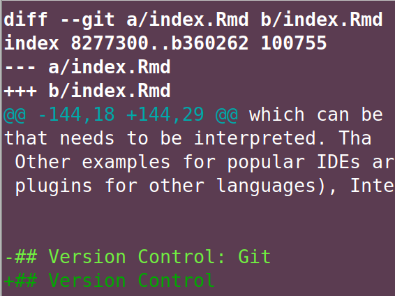

2 Stack - A Developer’s Toolkit
Just like natural craftsmen, digital carpenters depend on their toolbox and their mastery of it. Stack is what developers call the choice of tools used in a particular project. Even though different flavors come down to personal preferences, there is a lot of common ground in programming with data stacks. Throughout this book, often a choice for one piece of software needs to be made in order to illustrate things. But please notice that these choices are examples and focus on the role of an item in the big picture. To help you with the big picture of which tool does what, the following section will group common programming-with-data stack components. Also, notice that not every role has to be filled in every project.

Here are some components I use most often. This is a personal choice which works for me. Obviously not ALL of these are components are used in every small project. Git, R and R Studio would be my very minimal version.
| Component | Choice |
|---|---|
| Interpreter / Language | R, Python, Javascript |
| IDE / Editor | R Studio,VS Code, Sublime |
| Version Control | Git |
| Project Management | GitHub, GitLab |
| Database | PostgreSQL |
| ‘Virtual’ Environments | Docker |
| Communication (Visualization, Web) | Node, Quasar (vue.js) |
| Website Hosting | Netlify, GitHub Pages |
| Workflow Automation | Apache Airflow |
| Continous Integration | GitLab CI |
2.1 Languages: Compiled vs. Interpreted
In Statistical Computing – at least in Social Sciences – the interface between the researcher and the computation node is almost always an interpreted progamming language as opposed to a compiled one. Compiled languages like C++ require the developer to write source code and compile, i.e., translate source code into what a machine can work before runtime. The result of the compilation process is a binary which is specific to the operating system. Hence you will need one version for Windows, one for OSX and one for Linux if you intend to reach a truly broad audience with your program. The main advantage of a compiled language is speed in terms of computing performance because the translation into machine language does not happen during runtime. A reduction of development speed and increase in required developer skills are the downside of using compiled languages.
Big data is like teenage sex: everyone talks about it, nobody really knows how to do it, everyone thinks everyone else is doing it, so everyone claims they are doing it. – Dan Ariely, Professor of Psychology and Behavioral Economics, on twitter
The above quote became famous in the hacking data community, not only because of the provocative, fun part of it, but also because of the implicit advice behind it. Given the enormous gain in computing power in recent decades, but also methodological advances, interpreted languages are often fast enough for many social science problems. And even if it turns out, your data grow out of your setup, a well written proof of concept written in an interpreted language can be a formidable blueprint. Source code is turning into an important scientific communication channel. Put your money on it, your interdisciplinary collaborator from the High Performance Computing (HPC) group, will prefer some Python code as a briefing for their C++ or FORTRAN program over a wordy description out of your field’s ivory tower.
Interpreted languages are a bit like pocket calculators, you can look at intermediate results, line by line. R and Python are the most popular OSS choices in hacking with data, Julia is an up and coming, perfomance focused language with a much slimmer ecosystem. A bit of Javascript can’t hurt for advanced customization of graphics and online communication of your results.
2.2 IDE
It’s certainly possible to move a five person family into a new home by public transport, but it is not convenient. The same holds for (plain) text editors in programming. You can use them, but most people would prefer an Integrated Development Environment (IDE) just like they prefer to use a truck when they move. IDEs are tailored to the needs and idiosyncrasies of a language, some working with plugins and covering multiple languages. Others have a specific focus on a single language or a group of languages. Here are some of the features you are looking for in an IDE for programming with data:
- code highlighting, linting
- decent file explorer
- terminal integration
- git integration
- markdown support
- debugging tools
- build tools
- customizable through add-ins / macros
For R, the Open Source Edition of R Studio Desktop is the right choice for most people. (If you are working in a team, R Studio’s server version is great. It allows to have a centrally managed server which clients can use through their a web browser without even installing R and R Studio locally.) R Studio has solid support for a few other languages often used together with R, plus it’s customizable. The French premier thinkR Colin_Fay gave a nice tutorial on Hacking R Studio at the useR! 2019 conference.

While R Studio managed to hold its ground among R aficionados as of fall 2020, Microsoft’s free Visual Studio Code has blown the competition out of the water otherwise. Microsoft’s IDE is blazing fast, extendable and polyglot. VS Code Live Share is just one rather random example of its remarkably well implemented features. Live share allows developers to edit a document simultaneously using multiple cursors in similar fashion to Google Docs, but with all the IDE magic. And in a Desktop client.
Another approach is to go for a highly customizable editor such as Sublime or Atom. The idea is to send source code from the editor to interchangeable REPLs which can be adapted according to the language that needs to be interpreted. That way a good linter / code highlighter for your favorite language is all you need to have a lightweight environment to run things. An example of such a customization approach is Christoph Sax’ small project Sublime Studio.
Other examples for popular IDEs are Eclipse (mostly Java but tons of plugins for other languages), or JetBrains’ IntelliJ (Java) and PyCharm (Python).
2.3 Version Control
To buy into the importance of managing one’s code professionally may be the single most important take away from Hacking for Social Sciences. Being able to work with version control will help you fit into a lot of different teams that have contact points with data science and programming, let alone if you become part of a programming or data science team.
While version control has a long history dating back to CVS and SVN, the good news for the learner is, that there is a single dominant approach when it comes to version control in academia. Despite the fact that its predecessors and alternatives such as mercurial are stil around, git is the one you have to learn. To learn more about the history of version controls and approaches other than git, Eric Sink’s Version Control by Example is for you.
So what does git do for us as researchers? How is it different from dropbox?
git does not work like dropbox. git does not work like dropbox.
git does not work like dropbox. git does not work like dropbox.
git does not work like dropbox. git does not work like dropbox.
git does not work like dropbox. git does not work like dropbox.
git does not work like dropbox. git does not work like dropbox.
git does not work like dropbox. git does not work like dropbox.
The idea of thinking of a sync, is what interferes with comprehension of the benefit of version control (which why I hate that git GUIs call it ‘sync’ anyway to avoid irritation of user’s initial believes.). Git is a decentralized version control system that keeps track of a history of semantic commits. Those commits may consist of changes to multiple files. A commit message summarizes the gist of a contribution. Diffs allow to compare different versions.
Git is well suited for any kind of text file. May it be source code from Python or C++, or some text written in markdown or LaTeX. Binaries like .pdfs or Word documents are possible, too, but certainly not the type of file for which git is really useful. This book contains a detailed, applied introduction tailed to researchers as part of the Programmers’ Practices and Workflows chapter, so let’s dwell with the above contextualization for a bit.
2.4 Database: Relational vs. Non-Relational
To evaluate which database to pick up just seems like the next daunting task of stack choice. Luckily, in research first encounters with a database are usually passive, in the sense that you want to query data from a source. In other words the choice has been made for you. So unless you want to start your own data collection from scratch, simply sit back, relax and let the internet battle out another conceptual war.
Database Management Systems (DBMS) are basically grouped into relational and non-relational ones. Relational databases come with the Structured Query Language (SQL) and have been around forever. SQL became and ISO and ANSI standard and continues to be the essence of many many backends around the world. Oracle continues to be the benchmark for SQL databases but the opensource PostgreSQL and Microsoft’s SQL Server operate at eye level for many applications. MySQL, Oracle’s slim, little (but free) brother, can’t quite cope with PostgreSQL, continues to be the most used SQL database on the planet. This is mainly due to its popularity for web applications like the blogging CMS wordpress. Last but not least, sqlite needs to be mentioned when talking about relational database. Sqlite is built into all mobile phones and most computers. Its name nutshells its concept quite well: sqlite is an easy to use, much simpler version of the aforementioned database management systems. It is extremely popular for light but powerful applications that organize data with a SQL approach in a single file.
No-SQL databases are the anti establishment, anti standard approach. MongoDB may be the best marketed among the rebels. Before you start to sympathize with latter approach because the wording of my last to sentences, let’s stop here. Large infrastructure players make the case for non-relational stores like CouchDB or Amazon Redshift Database, but trust me, those are unlikely the first things you get to run when your research grows out of Excel. If your are not happy with the ‘beyond-the-scope-of-this-book’ argument, blogging experts like Lukas Eder maybe biased but much better educated to educate you here. The idea of this chapter is just to help you group all the database management systems you might face soon as a researchers.
The good news is, languages like R and Python are so well equipped to interface with a plethora of databases. So well, that I often recommend these languages to researchers who work with other less equipped tools, solely as an intermediate layer. And if there is really no database extension around for your language, a general ODBC interface helps – at least for SQL databases.
2.5 Environments: Where Should I Run Stuff ?
But what if you do not want to run your stuff locally? Maybe because you want to expose a web application or site which has to be online 24/7. Maybe because you do not more additional computing power.
In principle there are four options.
Bare Metal. Buy hardware, hook it up with the internet, install your software, have fun. If you have a consistantly high usage rate and can maintain the server efficiently, this is likely the cheapest computing hour. You saw that if, didn’t you?
Either use physical or virtual hardware and make your local IT department host your service on-premise (inhouse). You will give up a little bit of your flexible in exchange for help with maintenance and server administration.
Cloud Computing.
Software-as-a-Service
2.6 Communication
Communication is an essentially part of building an (academic) career. Part of it is a neat online profile. Do not relax on the excuse that your department’s website does not offer the flexibility. The legal and technical situation in many places should allow you to spin up your own website or even run a blog if you find the time. For free. Including the web hosting.
A popular approach to do so is to work with a static website generator. Generators like blogdown, pkgdown or bookdown are flavors of the same approach to create a website: Write markdown first, render it and then upload rendered HTML + CSS + Javascript to a host like GitHub Pages or Netlify that allow you host your site for free. The static website generator approach has become so popular that the aforementioned hosters even offer to run the render process for you.
The idea of engines like the Go based Hugo or the Ruby based Jekyll which are behind the above packages is a counter approach to what content management systems do: There is no database or template that is brought together dynamically when a user visits the website. The rendering is done locally on the creator’s local computer (or netlify’s environment). Whenever a change is made, the website is rendered entirely (ok, minus caching) and uploaded (pushed) again to the host. Therefore no database is needed which cuts down the costs of hosting to zero. (FWIW: this book is made with such a generator.)
2.7 Automation
The first type of automation described here refers to automation of your development workflow. That it is, you standardize your path from draft to program to deployment to production. Modern version control software accompanies this process with a toolchain that is often fuzzily called CI/CD. While CI stands for continuous integration and simply refers to a workflow in which the team tries to release new features to production as continuously as possible, CD stands for either continuous delivery or continuous deployment.
However, in practice the entire toolchain referred to as CI/CD has become broadly available in well documented fashion when git hosting powerhouses GitHub and GitLab introduced their flavors of it: [GitHub Actions])(https://docs.github.com/en/actions) and GitLab CI. In addition services like Travis CI or Circle CI offer this toolchain independently of hosting git repositories.
Users of these platforms can upload a simple textfile that follows a name convention and structure to trigger a step based toolchain based on an event. An example of an event may be the push to a repository’s main branch. A common example would be to run tests and/or build a package and upon success deploy the newly created package to some server – all triggered by simple push to master. One particularly cool thing is, that there multiple services who allow to run the testing on their servers using container technologies. This leads to great variety of setups for testing. That way software can easily be tested on different operating systems / environments. Also the mentioned website rendering approach mentioning in the previous section as a potential CI/CD application.
Here is a simple example of a .gitlab-ci.yml configuration that builds and tests a package and deploys it. It’s triggered on push to master:
stages:
- buildncheck
- deploy_pack
test:
image:
name: some.docker.registry.com/some-image:0.2.0
entrypoint:
- ""
stage: buildncheck
artifacts:
untracked: true
script:
- rm .gitlab-ci.yml # we don't need it and it causes a hidden file NOTE
- install2.r --repos custom.mini.cran.ch .
- R CMD build . --no-build-vignettes --no-manual
- R CMD check --no-manual *.tar.gz
deploy_pack:
only:
- master
stage: deploy_pack
image:
name: byrnedo/alpine-curl
entrypoint: [""]
dependencies:
- 'test'
script:
- do some more steps to login and deploy to server ...
For more in depth examples of the above, Jim Hester’s talk on GitHub Actions for R is a very good starting point.
The other automation tool I would like to mention is Apache Airflow because of its ability to help researchers keep an overview of regularly running processes. Examples of such processes could be daily or monthly data sourcing or timely publication of a regularly published indicator. I often referred to it as cronjobs on steroids. Airflow ships with a dashboard to keep track of many timed processes, plus a ton of other log and reporting features worth a lot when maintaining reocurring processes.